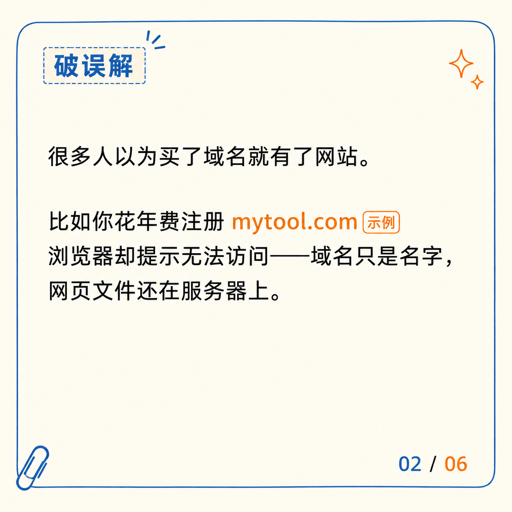
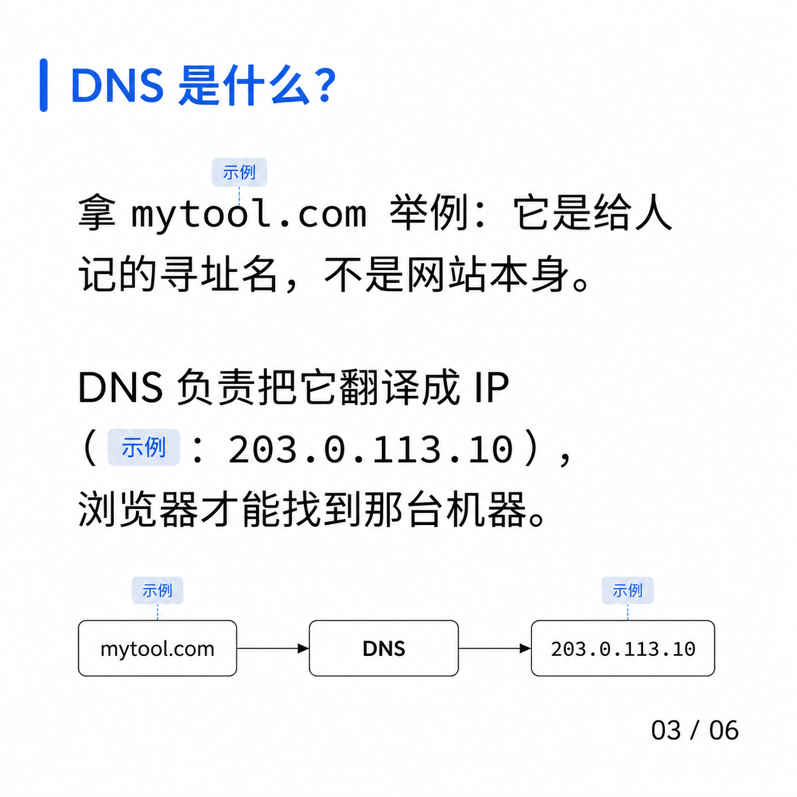
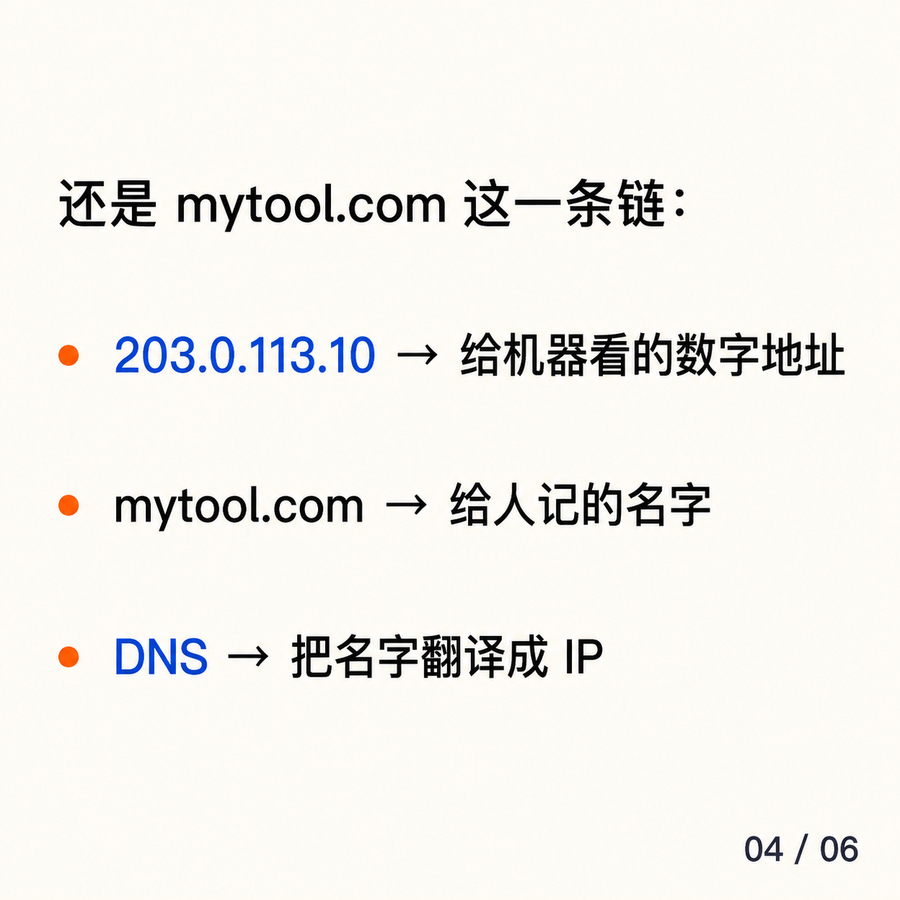
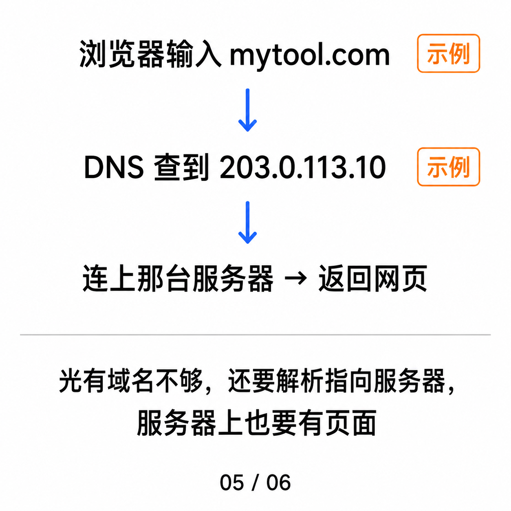
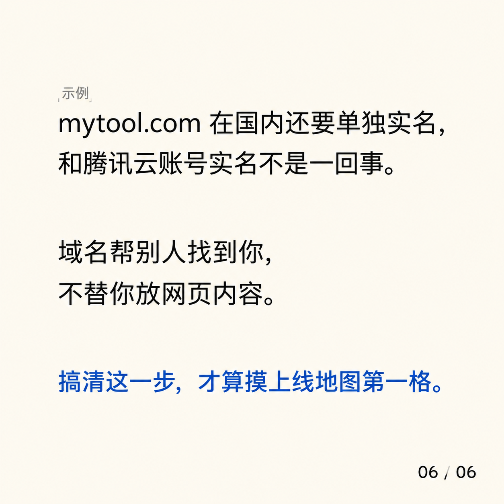
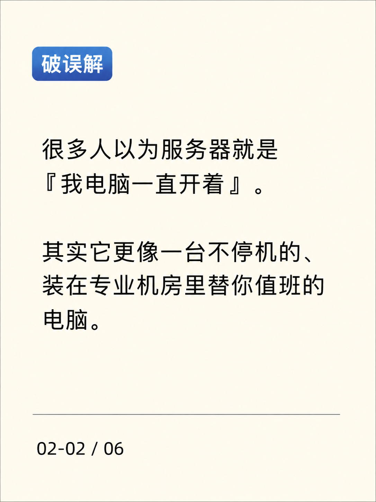
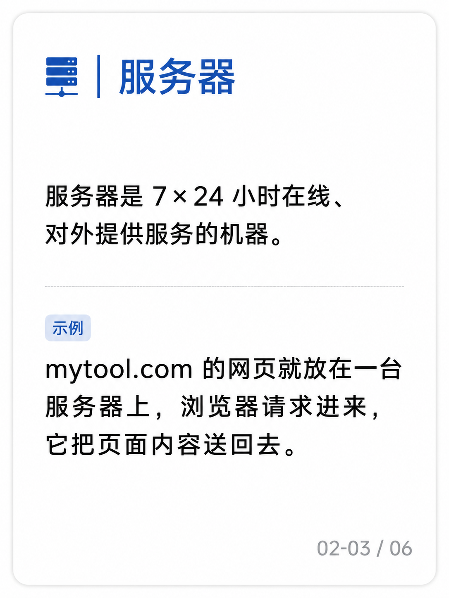
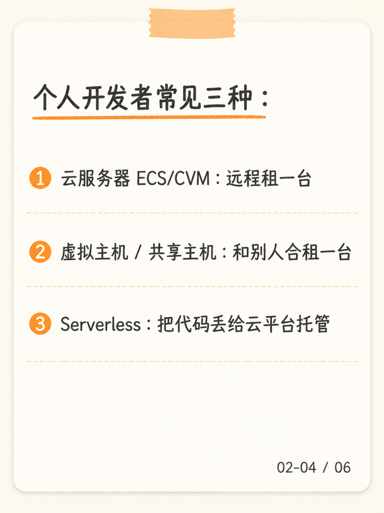
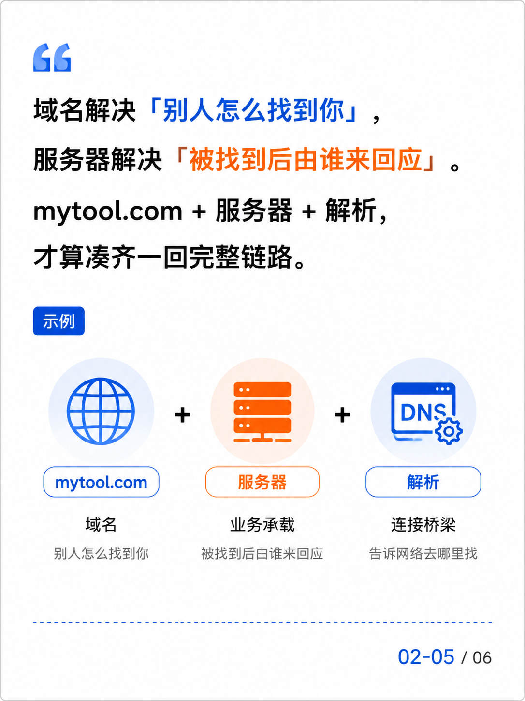

网站上线基础设施
一个中国个人开发者想把网站上线，需要理解的 10 个基础概念。
10 条图文，6 卡 + 8 卡组合，全部用 mytool.com 实例贯穿。
域名到底是什么？ 买了 mytool.com，为什么还打不开？
01-01 / 08
很多人以为买了域名就有了网站。 比如你花年费注册 mytool.com，浏览器却提示无法访问——域名只是名字，网页文件还在服务器上。 对个人开发者：搞不清「寻址名 ≠ 网站本体」，上线第一天就会卡在解析那一步。
01-02 / 08
拿 mytool.com 举例：它是给人记的寻址名，不是网站本身。 DNS 负责把它翻译成 IP（示例：203.0.113.10），浏览器才能找到那台机器。
01-03 / 08
还是 mytool.com 这一条链： 203.0.113.10 → 给机器看的数字地址 mytool.com → 给人记的名字 DNS → 把名字翻译成 IP
01-04 / 08
浏览器输入 mytool.com → DNS 查到 203.0.113.10 → 连上那台服务器 → 返回网页 光有域名不够，还要解析指向服务器，服务器上也要有页面。
01-05 / 08
mytool.com 在国内还要单独实名，和腾讯云账号实名不是一回事。 域名帮别人找到你，不替你放网页内容。 搞清这一步，才算摸上线地图第一格。
01-06 / 08
买了域名没实名 → 注册商提示「不可解析」。 实名信息填错 → 修改要重新走审核，等几天。 mytool.com 用个人身份证实名，公司主体备案就过不了。 域名实名 ≠ 账号实名 ≠ 备案主体——三个是两件事。
01-07 / 08
解析 = 让域名指向哪台服务器。 云平台添加 A 记录：mytool.com → 203.0.113.10。 改完通常几分钟内全球生效（DNS 缓存）。 域名 + 解析 + 服务器 = 三件事齐了，浏览器才找得到你。
01-08 / 08Caption
场景：你刚注册 `mytool.com`，打开却是空白——通常是域名、解析、服务器、页面四件事没串起来，不是「买错了」。备案和买域名也是两件事；实名审核常见约 1–3 个工作日。个人开发者视角整理，非法律建议。#个人开发者 #独立开发 #产品上线 ---
服务器到底是什么？ 没它，域名解析了也没东西能响应——上线最后一步。
02-01 / 08
很多人以为服务器就是「我电脑一直开着」。 其实它更像一台不停机的、装在专业机房里替你值班的电脑。 对个人开发者：上线花钱和选规格的对象，就是它——选错地域影响备案和访问速度。
02-02 / 08
服务器是 7×24 小时在线、对外提供服务的机器。 mytool.com 的网页放在一台服务器上，浏览器请求进来，它把页面送回去。
02-03 / 08
个人开发者常见三种： ① 云服务器（ECS/CVM）：远程租一台 ② 虚拟主机 / 共享主机：和别人合租一台 ③ Serverless：把代码丢给云平台托管
02-04 / 08
域名解决「别人怎么找到你」， 服务器解决「被找到后由谁来回应」。 mytool.com + 服务器 + 解析，才算凑齐一回完整链路。
02-05 / 08
服务器要付租金、要选地域、要续费。 服务器在国内就要考虑备案。 后面条目拆云服务器、虚拟主机、Serverless 怎么选。
02-06 / 08
云服务器自由，但要自己扛运维。 共享主机省心，但配置锁死、跑不动大流量。 Serverless 免运维，但冷启动慢、调试复杂。
02-07 / 08
升级信号：CPU 长期偏高、月流量快超阈值、部署成了体力活。 路径：共享主机 → 轻量 / 云服务器 → ECS。 第一版先别上 ECS——还没验证需求，钱白花。
02-08 / 08Caption
你为什么会在意：上线前第一个要付费的「重资产」，选错地域就影响备案和访问速度。场景：下单了一台云服务器、拿到公网 IP，浏览器输入 IP 还是看不到——通常是没装程序、没开端口。个人开发者视角整理。#个人开发者 #独立开发 #产品上线 ---

备案到底是什么？ 没备就关停，国内服务器上线第一道门。
03-01 / 08
备案不是给网站内容「过审」。 它是「域名 + 服务器」绑在一起、报给工信部的一步行政登记。 对个人开发者：跳过这一步，国内服务器站点直接开不起来。
03-02 / 08
主体：你（个人 / 公司）是谁 网站：放什么服务 接入商：你买的哪家云平台
03-03 / 08
域名解析到中国大陆服务器，就必须备案。 服务器在境外，目前不要求。 跟 .com 还是 .cn 后缀没关系，看服务器在哪里。
03-04 / 08
首次备案一般 1–20 个工作日，因地因人而异。 常见被驳回：域名实名信息和备案主体不一致；服务器不在你户籍地或常驻地。 具体以接入商控制台和管局口径为准。
03-05 / 08
备案是接入门票，不是内容审核。 mytool.com 想进大陆服务器，要走完这一步才合法「开门」。 DNS 怎么配、接入商怎么填，见后续条目。
03-06 / 08
同一个 mytool.com、同一台国内服务器—— 产品官网备案：填主体 + 网站名 + ICP 备案号。 小程序后端备案：还要填服务类目 + 接入方式，要 AppID。 同一台机器，备案要填的东西、驳回概率都不同——用途决定代价
03-07 / 08
三类真实驳回： ① 主体信息与域名实名不一致 ② 网站名称不合规 ③ 服务器不在户籍地或常驻地 解法：改信息、改名、换接入商或加居住证明——看驳回原因。
03-08 / 08Caption
你为什么会在意：首次备案不是一次过——驳回再提交会重排 1–2 周。场景：你周一提交，周五上午被驳回，原因是「网站名称不含规范词」，改完再提交又要等几天。个人开发者视角整理，非法律建议。#个人开发者 #独立开发 #产品上线 ---

SSL 证书到底是什么？ 没它浏览器标红「不安全」，小程序和微信生态直接拒绝接入。
04-01 / 08
SSL 证书不是「让网站变高级」的装饰。 它是浏览器和服务器之间的「身份证 + 加密锁」。 对个人开发者：现在的小程序、支付、第三方登录，基本都强制 https。
04-02 / 08
① 加密：传输内容不让中间人偷看 ② 身份：证明这台服务器就是 mytool.com 声明的那台 ③ 信任：由可信第三方（CA）签发
04-03 / 08
DV（域名验证）：只验证你能控制这个域名，最快 OV（组织验证）：再加验证机构身份 EV（扩展验证）：更严，浏览器地址栏展示更多
04-04 / 08
云平台一键申请免费证书（通常 DV）。 绑定域名 mytool.com 后，到期前续签或重新申请。 证书过期没换，浏览器会直接红色警告。
04-05 / 08
网站不装证书，浏览器会标「不安全」。 个人项目先用云厂商免费 DV 就够。 mytool.com 的「锁」是基本动作，不是加分项。
04-06 / 08
浏览器标「不安全」——绝大多数用户会关掉。 微信内嵌页、公众号 H5、小程序 web-view——不装直接打不开。 支付场景——回调地址必须 https。 不装证书 = 把大量用户挡在门外。
04-07 / 08
① 证书过期没换：浏览器红屏；常常在凌晨收到报警。 ② 证书绑错域名：浏览器提示「不匹配」。 云平台免费证书通常 90 天到期——日历提前 14 天提醒续期。
04-08 / 08Caption
你为什么会在意：现在不装证书，新用户打开就被警告，小程序和支付场景会直接被拒。场景：刚上线的小程序或官网，出现「您的连接不是私密连接」通常是证书没装、过期或域名没在证书里。个人开发者视角整理。#个人开发者 #独立开发 #产品上线 ---

CDN 到底是什么？ 流量从 0 到 1000，省钱和不被压垮的关键开关。
05-01 / 08
CDN 不是「让网站变快」的玄学开关。 它是在全国各地放「复印点」，让用户就近拿内容。 对个人开发者：也是第一次面对「被攻击 / 被爬」时的第一道缓冲。
05-02 / 08
源站：真正的服务器 203.0.113.10 节点：分散各地的副本 调度：DNS 把用户指向最近的节点
05-03 / 08
减少延迟：物理距离近 抗突发：单点压力大时分流 隐藏源站：用户拿不到真实 IP
05-04 / 08
动态接口（要实时算的）不一定加速 配错缓存策略可能「改完不生效」 HTTPS 证书要和源站/域名对齐
05-05 / 08
流量上来后再上 CDN，先把源站跑稳。 mytool.com 装 CDN 后，DNS 解析会指向 CDN 节点，不是源 IP。 CDN = 放大器：要先有流量，CDN 才有用。
05-06 / 08
① 缓存策略配错：更新了文案，用户看到旧版本。 ② 动态接口被缓存：用户看到别人的数据。 ③ 源站 IP 暴露：CDN 没开回源鉴权，被绕过直打源站。 首次接入 CDN 一定要在测试域名上跑一遍。
05-07 / 08
不急着接：日活 < 100 / 几乎全是动态内容 / 还没做 HTTPS。 需要接：月流量超约 100 GB / 源站 CPU 常被打满 / 国内多地域慢。 起步阶段不上 CDN——CDN 是放大器，不是补药。
05-08 / 08Caption
你为什么会在意：起步阶段省钱的工具，流量起来后变成「服务器不被压垮」的关键。场景：刚上线没人访问，先别买 CDN。个人开发者视角整理。#个人开发者 #独立开发 #产品上线 ---

域名、服务器、备案是什么关系？ 新手第一次上线卡得最久的，就是这条顺序链。
06-01 / 08
域名：别人怎么找到你 服务器：被找到后由谁来回应 备案：在中国大陆合法「开门营业」的入场券 对个人开发者：上线动作里最容易错位的一组概念。
06-02 / 08
① 注册域名 + 实名 ② 买服务器（地域先想好） ③ 备案（域名实名 + 服务器 + 接入商三合一） ④ 解析：把域名指向服务器 IP ⑤ 上线：放页面 / 程序
06-03 / 08
只买域名没解析 → 浏览器找不到 只买服务器没备案 → 大陆站点会被关停 先备案再买域名 → 备案主体信息对不上
06-04 / 08
服务器在境外，目前不要求 ICP 备案。 访问速度、合规要求、支付方式各自不同。 mytool.com 想出海才考虑这条路。 （不展开跨境支付细节，仅作边界提示。）
06-05 / 08
这是上线基础设施里最常错位的一条链。 顺序对、概念清，剩下是填表和等审核。 后续条目拆每一步怎么落地。
06-06 / 08
访问体验：国内用户访问境外服务器，延迟通常较高。 合规要求：域名仍要实名；具体合规场景以服务商页面为准。 支付方式：境外信用卡 + Stripe 通用；境内支付方式各有适用条件。
06-07 / 08
错位一：先备案后买域名 → 信息对不上 → 重提交几周。 错位二：服务器地域选错 → 想迁回大陆 → 重备数周。 错位三：解析类型配错 → 站点时通时不通 → 排查数小时。 上线地图的错位成本以周计，不以小时计——顺序先对再动手。
06-08 / 08Caption
你为什么会在意：上线失败 80% 不是代码错，是这条链上某一步没串起来。场景：朋友问「域名买了，服务器也买了，怎么还看不到」——通常是顺序错或备案没通过。个人开发者视角整理。#个人开发者 #独立开发 #产品上线 ---

为什么国内服务器通常要备案？ 新手项目最常见的「上线失败」原因之一。
07-01 / 08
中国大陆对提供互联网信息服务的站点做登记。 没登记就不能在大陆服务器上对外提供服务。 对个人开发者：这是出海攻略忽悠你「免备案」前必须知道的事实——「免备案」只在境外服务器管用。
07-02 / 08
工信部 + 省通信管理局。 接入商（云平台）代为提交、查验。
07-03 / 08
网站被关停，域名被列入黑名单。 其他接入商也不能再用这个域名。 个人开发者新项目最常见的「上线失败」原因之一。
07-04 / 08
服务器在境外。 纯内网、不对外暴露。 后端 API 仍解析到大陆 IP 也要备。 「免备案」只在境外服务器管用，这是出海前必查的口径。
07-05 / 08
备案是入场券，不是审核你的代码写得好不好。 mytool.com 想做大陆用户，先把备案当成必须项排进时间表。
07-06 / 08
接入商检测到未备案 → 短信 + 站内信提醒。 几天后仍未备案 → HTTP 端口被屏蔽。 更久后 → 域名被列入黑名单 → 其他接入商也不能用。 「暂时不备」不是免费午餐——是倒计时。
07-07 / 08
①「只是个人项目，没流量」——没用，照样关。 ②「我不放内容，只放 API」——后端 API 解析到大陆 IP 也要备。 ③「用对象存储放静态文件」——只要走 CDN 大陆节点，还是要备。
07-08 / 08Caption
你为什么会在意：跳过这一步，国内服务器上的站点会被关停，新项目排期会延 2–3 周。场景：很多出海教程鼓吹「免备案」，但服务器在国内就绕不开。把它当成上线地图上的固定关卡。个人开发者视角整理，非法律建议。#个人开发者 #独立开发 #产品上线 ---

一个网页上线要经过哪几步？ 第一次上线排期的全部真相。
08-01 / 08
不是写完代码就直接上线。 中间还有 4–5 道手续，每一道都可能卡你几天。 对个人开发者：上线排期主要不是写代码，是这套流程。
08-02 / 08
① 注册域名 → ② 实名认证 ③ 买服务器 → ④ 备案（大陆必走） ⑤ 域名解析 → ⑥ 上传网站 / 测试 每一步都不能跳，但可以并行。
08-03 / 08
注册域名：几分钟。 实名审核：通常 1–3 个工作日。 备案：通常 1–20 个工作日。 解析生效：几分钟到几小时。
08-04 / 08
先备案后买域名 → 信息对不上 只解析没上传内容 → 空白页 只备案没解析 → 还是打不开
08-05 / 08
这是上线地图的标准路径。 mytool.com 这条链全跑通，才算「上线」二字。 后面条目拆每一步具体怎么做。
08-06 / 08
注册 + 实名：动手 10 分钟，等审核 1–3 个工作日。 买服务器 + 备案：动手 30 分钟，等审核 1–20 个工作日。 解析 + 上传 + 测试：动手 1 小时左右。 上线动作的瓶颈在「等」，不在「做」。
08-07 / 08
动手环节加起来不到 2 天。 等审核环节加起来通常 2 周左右。 总耗时：约 2 周，保守排 3 周、激进排 1 周。 新项目排期主要不是写代码，是这套流程。
08-08 / 08Caption
你会在哪里卡住：上线日不是「写完代码那天」，是「排队等审核通过那天」。个人开发者视角整理。#个人开发者 #独立开发 #产品上线 ---

静态网站适合什么项目？ 验证想法阶段最便宜也最快的一档选择。
09-01 / 08
不需要数据库、不需要后端语言的网站。 HTML/CSS/JS 文件直接放在服务器上就能跑。 对个人开发者：决定第一版要不要先堆后端的关键判断——多数产品介绍页、文档站都属此类。
09-02 / 08
个人主页 产品介绍 / 落地页 开源文档 活动页 / 一次性宣传页
09-03 / 08
用户登录、评论、收藏 电商下单、支付 实时数据（聊天、看板）
09-04 / 08
部署简单：上传文件即可。 成本低：静态托管便宜甚至免费。 速度快：没有后端拖累。 备案要求同：服务器在大陆仍要备案。
09-05 / 08
先问：是不是「只展示、不交互」？ 是 → 静态站。 不是 → 后面条目拆「轻量服务器」「Serverless」怎么选。 关键提醒：服务器在大陆，静态站同样要备案。
09-06 / 08
① 需要登录注册。 ② 需要表单提交。 ③ 想看访问数据。 验证需求阶段别急着升级——先用静态页测流量。
09-07 / 08
① 以为静态站不用备案——服务器在大陆仍要备案。 ② 在静态站里硬塞动态逻辑——不如接 Serverless 或单独后端。 ③ 把支付 / 登录硬塞进静态站——反模式，把简单的事变复杂。
09-08 / 08Caption
你为什么会在意：先静态后动态，把验证期成本压到最低，错过的只是「看起来复杂」。场景：产品还在验证阶段，先做静态落地页测流量。个人开发者视角整理。#个人开发者 #独立开发 #产品上线 ---

轻量服务器适合什么项目？ 起步阶段最划算的一档「够用就好」。
10-01 / 08
云厂商为个人开发者打包的入门套餐。 固定配置、按月付、自带常用运行环境。 对个人开发者：决定起步成本和未来升级路径的关键档位——比共享主机自由，比 ECS 便宜。
10-02 / 08
个人博客 / 小程序后端 小型 API 服务 学习、试验、原型 流量不大的工具站
10-03 / 08
大流量电商 复杂微服务架构 对内核参数、网络性能有专业要求
10-04 / 08
资源上限低：高负载会卡 套餐绑死：升级/迁移可能受限 国内仍要备案：跟普通服务器规则一样
10-05 / 08
起步阶段够用，比共享主机自由，比 ECS 便宜。 mytool.com 跑第一版先选轻量，等量起来了再升。 后续条目会拆「云服务器 ECS 怎么选」。。
10-06 / 08
① CPU 长期 > 60%。 ② 月流量超出套餐约 1.5 倍。 ③ 需要的功能（GPU、独立数据库）套餐里没有。 不要等到崩了才换——看到信号就提前 1–2 周规划。
10-07 / 08
价：轻量便宜，ECS 同配置偏贵。 性能：轻量 CPU 共享，ECS 可选独享。 自由度：ECS 可改内核参数，轻量锁死。 运维：轻量自带镜像 + 一键；ECS 要自己搭。 起步选轻量没错，但心里要知道它的天花板。
10-08 / 08Caption
你为什么会在意：起步阶段省下的几百到一千，决定第一款产品能多撑几个月。场景：第一款产品上线，先用轻量服务器撑 3–6 个月，等日活稳定再升级。个人开发者视角整理。#个人开发者 #独立开发 #产品上线